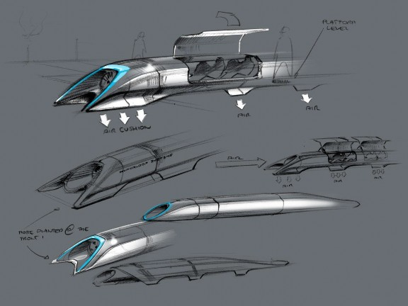
Intro
Hyperloop Alpha
The first several pages will attempt to describe the design in everyday language, keeping numbers to a minimum and avoiding formulas and jargon. I apologize in advance for my loose use of language and imperfect analogies.
The second section is for those with a technical background. There are no doubt errors of various kinds and superior optimizations for elements of the system. Feedback would be most welcome – please send to hyperloop@spacex.com or hyperloop@teslamotors.com. I would like to thank my excellent compadres at both companies for their help in putting this together.
Background
When the California “high speed” rail was approved, I was quite disappointed, as I know many others were too. How could it be that the home of Silicon Valley and JPL – doing incredible things like indexing all the world’s knowledge and putting rovers on Mars – would build a bullet train that is both one of the most expensive per mile and one of the slowest in the world? Note, I am
hedging my statement slightly by saying “one of”. The head of the California high speed rail project called me to complain that it wasn’t the very slowest bullet train nor the very most expensive per mile.
The underlying motive for a statewide mass transit system is a good one. It would be great to have an alternative to flying or driving, but obviously only if it is actually better than flying or driving. The train in question would be both slower, more expensive to operate (if unsubsidized) and less safe by two orders of magnitude than flying, so why would anyone use it?
If we are to make a massive investment in a new transportation system, then the return should by rights be equally massive. Compared to the alternatives, it should ideally be:
Is there truly a new mode of transport – a fifth mode after planes, trains, cars and boats – that meets those criteria and is practical to implement? Many ideas for a system with most of those properties have been proposed and should be acknowledged, reaching as far back as Robert Goddard’s to proposals in recent decades by the Rand Corporation and ET3.
Unfortunately, none of these have panned out. As things stand today, there is not even a short distance demonstration system operating in test pilot mode anywhere in the world, let alone something that is robust enough for public transit. They all possess, it would seem, one or more fatal flaws that prevent them from coming to fruition.
Constraining the Problem
The Hyperloop (or something similar) is, in my opinion, the right solution for the specific case of high traffic city pairs that are less than about 1500 km or 900 miles apart. Around that inflection point, I suspect that supersonic air travel ends up being faster and cheaper. With a high enough altitude and the right geometry, the sonic boom noise on the ground would be no louder than current airliners, so that isn’t a showstopper. Also, a quiet supersonic plane immediately solves every long distance city pair without the need for a vast new worldwide infrastructure.
However, for a sub several hundred mile journey, having a supersonic plane is rather pointless, as you would spend almost all your time slowly ascending and descending and very little time at cruise speed. In order to go fast, you need to be at high altitude where the air density drops exponentially, as air at sea level becomes as thick as molasses (not literally, but you get the picture) as you approach sonic velocity.
So What is Hyperloop Anyway?
Short of figuring out real teleportation, which would of course be awesome (someone please do this), the only option for super fast travel is to build a tube over or under the ground that contains a special environment. This is where things get tricky.
At one extreme of the potential solutions is some enlarged version of the old pneumatic tubes used to send mail and packages within and between buildings. You could, in principle, use very powerful fans to push air at high speed through a tube and propel people-sized pods all the way from LA to San Francisco. However, the friction of a 350 mile long column of air moving at anywhere near sonic velocity against the inside of the tube is so stupendously high that this is impossible for all practical purposes.
Another extreme is the approach, advocated by Rand and ET3, of drawing a hard or near hard vacuum in the tube and then using an electromagnetic suspension. The problem with this approach is that it is incredibly hard to maintain a near vacuum in a room, let alone 700 miles (round trip) of large tube with dozens of station gateways and thousands of pods entering and exiting every day. All it takes is one leaky seal or a small crack somewhere in the hundreds of miles of tube and the whole system stops working.
However, a low pressure (vs. almost no pressure) system set to a level where standard commercial pumps could easily overcome an air leak and the transport pods could handle variable air density would be inherently robust. Unfortunately, this means that there is a non-trivial amount of air in the tube and leads us straight into another problem.
Overcoming the Kantrowitz Limit
Whenever you have a capsule or pod (I am using the words interchangeably) moving at high speed through a tube containing air, there is a minimum tube to pod area ratio below which you will choke the flow. What this means is that if the walls of the tube and the capsule are too close together, the capsule will behave like a syringe and eventually be forced to push the entire column of air in the system. Not good.
Nature’s top speed law for a given tube to pod area ratio is known as the Kantrowitz limit. This is highly problematic, as it forces you to either go slowly
or have a super huge diameter tube. Interestingly, there are usually two solutions to the Kantrowitz limit – one where you go slowly and one where you go really, really fast.
The latter solution sounds mighty appealing at first, until you realize that going several thousand miles per hour means that you can’t tolerate even wide turns without painful g loads. For a journey from San Francisco to LA, you will also experience a rather intense speed up and slow down. And, when you get right down to it, going through transonic buffet in a tube is just fundamentally a dodgy prospect.
Both for trip comfort and safety, it would be best to travel at high subsonic speeds for a 350 mile journey. For much longer journeys, such as LA to NY, it would be worth exploring super high speeds and this is probably technically feasible, but, as mentioned above, I believe the economics would probably favor a supersonic plane.
The approach that I believe would overcome the Kantrowitz limit is to mount an electric compressor fan on the nose of the pod that actively transfers high pressure air from the front to the rear of the vessel. This is like having a pump in the head of the syringe actively relieving pressure.
It would also simultaneously solve another problem, which is how to create a low friction suspension system when traveling at over 700 mph. Wheels don’t work very well at that sort of speed, but a cushion of air does. Air bearings, which use the same basic principle as an air hockey table, have been demonstrated to work at speeds of Mach 1.1 with very low friction. In this case, however, it is the pod that is producing the air cushion, rather than the tube, as it is important to make the tube as low cost and simple as possible.
That then begs the next question of whether a battery can store enough energy to power a fan for the length of the journey with room to spare. Based on our calculations, this is no problem, so long as the energy used to accelerate the pod is not drawn from the battery pack.
This is where the external linear electric motor comes in, which is simply a round induction motor (like the one in the Tesla Model S) rolled flat. This would accelerate the pod to high subsonic velocity and provide a periodic reboost roughly every 70 miles. The linear electric motor is needed for as little as ~1% of the tube length, so is not particularly costly.
Making the Economics Work
The pods and linear motors are relatively minor expenses compared to the tube itself – several hundred million dollars at most, compared with several billion dollars for the tube. Even several billion is a low number when compared with several tens of billion proposed for the track of the California rail project.
The key advantages of a tube vs. a railway track are that it can be built above the ground on pylons and it can be built in prefabricated sections that are dropped in place and joined with an orbital seam welder. By building it on pylons, you can almost entirely avoid the need to buy land by following alongside the mostly very straight California Interstate 5 highway, with only minor deviations when the highway makes a sharp turn.
Even when the Hyperloop path deviates from the highway, it will cause minimal disruption to farmland roughly comparable to a tree or telephone pole, which farmers deal with all the time. A ground based high speed rail system by comparison needs up to a 100 ft wide swath of dedicated land to build up foundations for both directions, forcing people to travel for several miles just to get to the other side of their property. It is also noisy, with nothing to contain the sound, and needs unsightly protective fencing to prevent animals, people or vehicles from getting on to the track. Risk of derailment is also not to be taken lightly, as demonstrated by several recent fatal train accidents.
Earthquakes and Expansion Joints
A ground based high speed rail system is susceptible to Earthquakes and needs frequent expansion joints to deal with thermal expansion/contraction and subtle, large scale land movement.
By building a system on pylons, where the tube is not rigidly fixed at any point, you can dramatically mitigate Earthquake risk and avoid the need for expansion joints. Tucked away inside each pylon, you could place two adjustable lateral (XY) dampers and one vertical (Z) damper.
These would absorb the small length changes between pylons due to thermal changes, as well as long form subtle height changes. As land slowly settles to a new position over time, the damper neutral position can be adjusted accordingly. A telescoping tube, similar to the boxy ones used to access airplanes at airports would be needed at the end stations to address the cumulative length change of the tube.
Can it Really be Self-Powering?
For the full explanation, please see the technical section, but the short answer is that by placing solar panels on top of the tube, the Hyperloop can generate far in excess of the energy needed to operate. This takes into account storing enough energy in battery packs to operate at night and for periods of extended cloudy weather. The energy could also be stored in the form of compressed air that then runs an electric fan in reverse to generate energy, as demonstrated by LightSail.
Hyperloop Preliminary Design Study Technical Section
Abstract
Existing conventional modes of transportation of people consists of four unique types: rail, road, water, and air. These modes of transport tend to be either relatively slow (i.e., road and water), expensive (i.e., air), or a combination of relatively slow and expensive (i.e., rail). Hyperloop is a new mode of transport that seeks to change this paradigm by being both fast and inexpensive for people and goods. Hyperloop is also unique in that it is an open design concept, similar to Linux. Feedback is desired from the community that can help advance the Hyperloop design and bring it from concept to reality.
Hyperloop consists of a low pressure tube with capsules that are transported at both low and high speeds throughout the length of the tube. The capsules are supported on a cushion of air, featuring pressurized air and aerodynamic lift. The capsules are accelerated via a magnetic linear accelerator affixed at various stations on the low pressure tube with rotors contained in each capsule. Passengers may enter and exit Hyperloop at stations located either at the ends of the tube, or branches along the tube length.
In this study, the initial route, preliminary design, and logistics of the Hyperloop transportation system have been derived. The system consists of capsules that travel between Los Angeles, California and San Francisco, California. The total trip time is approximately half an hour, with capsules departing as often as every 30 seconds from each terminal and carrying 28 people each. This gives a total of 7.4 million people each way that can be transported each year on Hyperloop. The total cost of Hyperloop in this analysis is under $6 billion USD. Amortizing this capital cost over 20 years and adding daily operational costs gives a total of about $20 USD (in current year dollars) plus operating costs per one-way ticket on the passenger Hyperloop.
Useful feedback is welcomed on aspects of the Hyperloop design. E-mail feedback to hyperloop@spacex.com or hyperloop@teslamotors.com.
Abstract 6
Table of Contents 6
Background 8
Hyperloop Transportation System 9
Capsule 11
Geometry 13
Interior 15
Compressor 17
Suspension 20
Onboard Power 22
Propulsion 22
Cost 23
Tube 24
Geometry 25
Tube Construction 26
Pylons and Tunnels 27
Station Construction 31
Cost 32
Propulsion 32
Capsule Components (Rotor) 35
Tube Components (Stator) 36
Energy Storage Components 37
Cost 37
Propulsion for Passenger Plus Vehicle System 38
Route 38
Route Optimization 40
Los Angeles/Grapevine - South 43
Los Angeles/Grapevine – North 45
I-5 47
I-580/San Francisco Bay 48
4.4.3. Station Locations 50
Safety and Reliability 52
Onboard Passenger Emergency 52
Power Outage 53
Capsule Depressurization 53
Capsule Stranded in Tube 54
Structural Integrity of the Tube in Jeopardy 54
Earthquakes 54
Human Related Incidents 54
Reliability 55
Cost 55
Conclusions 56
Future Work 57
The corridor between San Francisco, California and Los Angeles, California is one of the most often traveled corridors in the American West. The current practical modes of transport for passengers between these two major population centers include:
Road (inexpensive, slow, usually not environmentally sound)
Air (expensive, fast, not environmentally sound)
Rail (expensive, slow, often environmentally sound)
A new mode of transport is needed that has benefits of the current modes without the negative aspects of each. This new high speed transportation system has the following requirements:
Ready when the passenger is ready to travel (road)
Inexpensive (road)
Fast (air)
Environmentally friendly (rail/road via electric cars)
The current contender for a new transportation system between southern and northern California is the “California High Speed Rail.” The parameters outlining this system include:
Currently $68.4 billion USD proposed cost
Average speed of 164 mph (264 kph) between San Francisco and Los Angeles
Travel time of 2 hours and 38 minutes between San Francisco and Los Angeles
Compare with 1 hour and 15 minutes by air
Compare with 5 hours and 30 minutes by car
Average one-way ticket price of $105 one-way (reference)
Compare with $158 round trip by air for September 2013
Compare with $115 round trip by road ($4/gallon with 30 mpg vehicle)
A new high speed mode of transport is desired between Los Angeles and San Francisco; however, the proposed California High Speed Rail does not reduce current trip times or reduce costs relative to existing modes of transport. This preliminary design study proposes a new mode of high speed transport that reduces both the travel time and travel cost between Los Angeles and San Francisco. Options are also included to increase the transportation system to other major population centers across California. It is also worth noting the energy cost of this system is less than any currently existing mode of transport
(Figure 1). The only system that comes close to matching the low energy requirements of Hyperloop is the fully electric Tesla Model S.
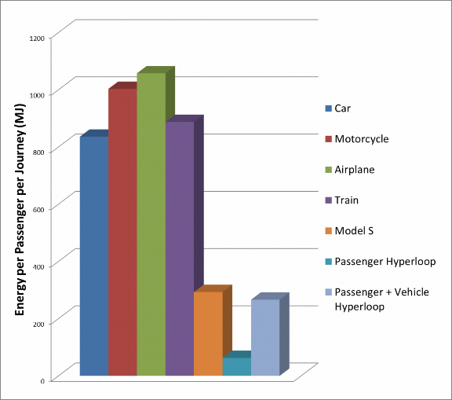
Hyperloop (Figure 2 through Figure 3) is a proposed transportation system for traveling between Los Angeles, California, and San Francisco, California in 35 minutes. The Hyperloop consists of several distinct components, including:
Capsule:
Sealed capsules carrying 28 passengers each that travel along the interior of the tube depart on average every 2 minutes from Los Angeles or San Francisco (up to every 30 seconds during peak usage hours).
A larger system has also been sized that allows transport of 3 full size automobiles with passengers to travel in the capsule.
The capsules are separated within the tube by approximately 23 miles (37 km) on average during operation.
The capsules are supported via air bearings that operate using a compressed air reservoir and aerodynamic lift.
Tube:
The tube is made of steel. Two tubes will be welded together in a side by side configuration to allow the capsules to travel both directions.
Pylons are placed every 100 ft (30 m) to support the tube.
Solar arrays will cover the top of the tubes in order to provide power to the system.
Propulsion:
Linear accelerators are constructed along the length of the tube at various locations to accelerate the capsules.
Stators are located on the capsules to transfer momentum to the capsules via the linear accelerators.
Route:
There will be a station at Los Angeles and San Francisco. Several stations along the way will be possible with splits in the tube.
The majority of the route will follow I-5 and the tube will be constructed in the median.
Los Angeles, CA
San Francisco, CA
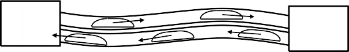
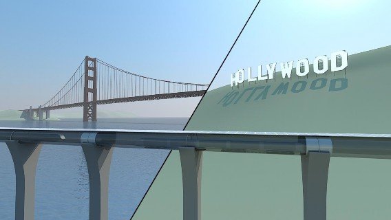
In addition to these aspects of the Hyperloop, safety and cost will also be addressed in this study.
The Hyperloop is sized to allow expansion as the network becomes increasingly popular. The capacity would be 840 passengers per hour which more than sufficient to transport all of the 6 million passengers traveling between Los Angeles and San Francisco areas per year. In addition, this accounts for 70% of those travelers to use the Hyperloop during rush hour. The lower cost of traveling on Hyperloop is likely to result in increased demand, in which case the time between capsule departures could be significantly shortened.
Two versions of the Hyperloop capsules are being considered: a passenger only version and a passenger plus vehicle version.
Hyperloop Passenger Capsule
Assuming an average departure time of 2 minutes between capsules, a minimum of 28 passengers per capsule are required to meet 840 passengers per hour. It is possible to further increase the Hyperloop capacity by reducing the time between departures. The current baseline requires up to 40 capsules in activity during rush hour, 6 of which are at the terminals for loading and unloading of the passengers in approximately 5 minutes.
Hyperloop Passenger Plus Vehicle Capsule
The passenger plus vehicle version of the Hyperloop will depart as often as the passenger only version, but will accommodate 3 vehicles in addition to the passengers. All subsystems discussed in the following sections are featured on both capsules.
For travel at high speeds, the greatest power requirement is normally to overcome air resistance. Aerodynamic drag increases with the square of speed, and thus the power requirement increases with the cube of speed. For example, to travel twice as fast a vehicle must overcome four times the aerodynamic resistance, and input eight times the power.
Just as aircraft climb to high altitudes to travel through less dense air, Hyperloop encloses the capsules in a reduce pressure tube. The pressure of air in Hyperloop is about 1/6 the pressure of the atmosphere on Mars. This is an operating pressure of 100 Pascals, which reduces the drag force of the air by 1,000 times relative to sea level conditions and would be equivalent to flying above 150,000 feet altitude. A hard vacuum is avoided as vacuums are expensive and difficult to maintain compared with low pressure solutions. Despite the low pressure, aerodynamic challenges must still be addressed. These include managing the formation of shock waves when the speed of the capsule approaches the speed of sound, and the air resistance increases sharply. Close to the cities where more turns must be navigated, capsules travel at a lower speed. This reduces the accelerations felt by the passengers, and also reduces power requirements for the capsule. The capsules travel at
760 mph (1,220 kph, Mach 0.91 at 68 ºF or 20 ºC).
The proposed capsule geometry houses several distinct systems to reside within the outer mold line (Figure 4).
Inlet
Compressor
Compressor
Batteries
fan
Air storage
motor
Firewall/ sound bulkhead
Seating (2 x 14)
Suspension
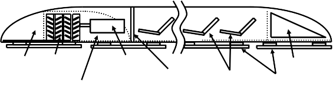
Geometry
In order to optimize the capsule speed and performance, the frontal area has been minimized for size while maintaining passenger comfort (Figure 5 and Figure 6).
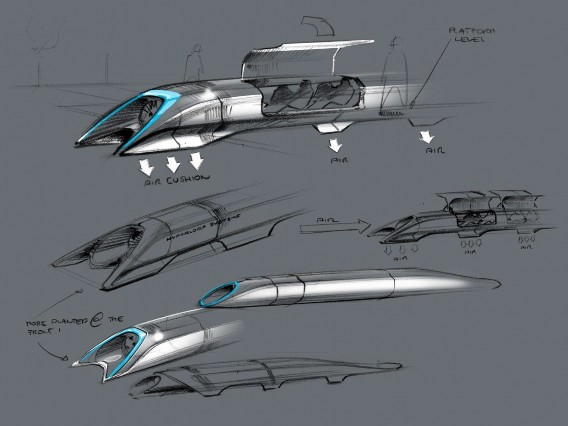
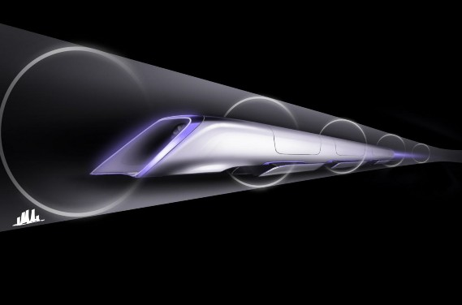
The vehicle is streamlined to reduce drag and features a compressor at the leading face to ingest oncoming air for levitation and to a lesser extent propulsion. Aerodynamic simulations have demonstrated the validity of this ‘compressor within a tube’ concept (Figure 7).
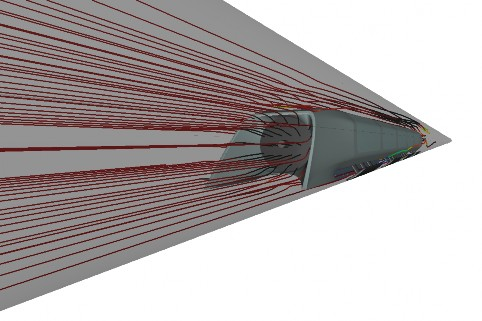
Hyperloop Passenger Capsule
The maximum width is 4.43 ft (1.35 m) and maximum height is 6.11 ft (1.10 m). With rounded corners, this is equivalent to a 15 ft2 (1.4 m2) frontal area, not including any propulsion or suspension components.
The aerodynamic power requirements at 700 mph (1,130 kph) is around only 134 hp (100 kW) with a drag force of only 72 lbf (320 N), or about the same force as the weight of one oversized checked bag at the airport. The doors on each side will open in a gullwing (or possibly sliding) manner to allow easy access during loading and unloading. The luggage compartment will be at the front or rear of the capsule.
The overall structure weight is expected to be near 6,800 lb (3,100 kg) including the luggage compartments and door mechanism. The overall cost of the structure including manufacturing is targeted to be no more than $245,000.
Hyperloop Passenger Plus Vehicle Capsule
The passenger plus vehicle version of the Hyperloop capsule has an increased frontal area of 43 ft2 (4.0 m2), not including any propulsion or suspension components. This accounts for enough width to fit a vehicle as large as the Tesla Model X.
The aerodynamic power requirement at 700 mph (1,130 kph) is around only 382 hp (285 kW) with a drag force of 205 lbf (910 N). The doors on each side will open in a gullwing (or possibly sliding) manner to allow accommodate loading of vehicles, passengers, or freight.
The overall structure weight is expected to be near 7,700 lb (3,500 kg) including the luggage compartments and door mechanism. The overall cost of the structure including manufacturing is targeted to be no more than $275,000.
Interior
The interior of the capsule is specifically designed with passenger safety and comfort in mind. The seats conform well to the body to maintain comfort during the high speed accelerations experienced during travel. Beautiful landscape will be displayed in the cabin and each passenger will have access their own personal entertainment system.
Hyperloop Passenger Capsule
The Hyperloop passenger capsule (Figure 8 and Figure 9) overall interior weight is expected to be near 5,500 lb (2,500 kg) including the seats, restraint systems, interior and door panels, luggage compartments, and entertainment
displays. The overall cost of the interior components is targeted to be no more than $255,000.
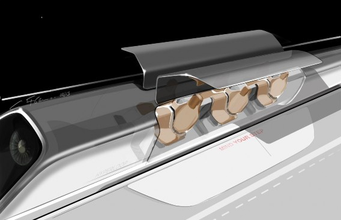
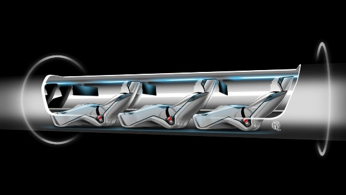
Hyperloop Passenger Plus Vehicle Capsule
The Hyperloop passenger plus vehicle capsule overall interior weight is expected to be near 6,000 lb (2,700 kg) including the seats, restraint systems, interior and door panels, luggage compartments, and entertainment displays. The overall cost of the interior components is targeted to be no more than
$185,000.
Compressor
One important feature of the capsule is the onboard compressor, which serves two purposes. This system allows the capsule to traverse the relatively narrow tube without choking flow that travels between the capsule and the tube walls (resulting in a build-up of air mass in front of the capsule and increasing the drag) by compressing air that is bypassed through the capsule. It also supplies air to air bearings that support the weight of the capsule throughout the journey.
The air processing occurs as follows (Figure 10 and Figure 11) (note mass counting is tracked in Section 4.1.4):
Hyperloop Passenger Capsule
Tube air is compressed with a compression ratio of 20:1 via an axial compressor.
Up to 60% of this air is bypassed:
The air travels via a narrow tube near bottom of the capsule to the tail.
A nozzle at the tail expands the flow generating thrust to mitigate some of the small amounts of aerodynamic and bearing drag.
Up to 0.44 lb/s (0.2 kg/s) of air is cooled and compressed an additional 5.2:1 for the passenger version with additional cooling afterward.
This air is stored in onboard composite overwrap pressure vessels.
The stored air is eventually consumed by the air bearings to maintain distance between the capsule and tube walls.
An onboard water tank is used for cooling of the air.
Water is pumped at 0.30 lb/s (0.14 kg/s) through two intercoolers (639 lb or 290 kg total mass of coolant).
The steam is stored onboard until reaching the station.
Water and steam tanks are changed automatically at each stop.
The compressor is powered by a 436 hp (325 kW) onboard electric motor:
The motor has an estimated mass of 372 lb (169 kg), which
includes power electronics.
An estimated 3,400 lb (1,500 kg) of batteries provides 45 minutes of onboard compressor power, which is more than sufficient for the travel time with added reserve backup power.
Onboard batteries are changed at each stop and charged at the stations.
Axial compressor
Pin ≈ 276 kW
Air Out
p ≈ 2.1 kPa
T ≈ 857 K
Nozzle expander
Air In
p ≈ 99 Pa
T ≈ 292 K
≈ 0.49 kg/s
Air Cooled
T 300 K
≈ 0.29 kg/s
≈ 0.2 kg/s
Pin ≈ 52 kW
Air Out
Fthrust ≈ 170 N
Pthrust ≈ 58 kW
Water Reservoir
p ≈ 101 kPa
T ≈ 293 K
Intercooler Intercooler
Air
p ≈ 11 kPa
T ≈ 400 K
𝑚≈ 290 kg Air Out
p ≈ 11 kPa
T ≈ 557 K
Steam
Water In
𝐻2𝑂 ℓ ≈ 0.14 kg/s
Steam Out
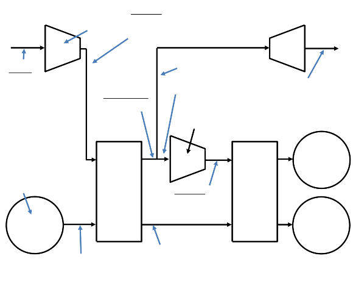
Hyperloop Passenger Plus Vehicle Capsule
Tube air is compressed with a compression ratio of 20:1 via an axial compressor.
Up to 85% of this air is bypassed:
The air travels via a narrow tube near bottom of the capsule to the tail.
A nozzle at the tail expands the flow generating thrust to mitigate some of the small amounts of aerodynamic and bearing drag.
Up to 0.44 lb/s (0.2 kg/s) of air is cooled and compressed an additional 6.2:1 for the passenger plus vehicle version with additional cooling afterward.
This air is stored in onboard composite overwrap pressure vessels.
The stored air is eventually consumed by the air bearings to maintain distance between the capsule and tube walls.
An onboard water tank is used for cooling of the air.
Water is pumped at 0.86 lb/s (0.39 kg/s) through two intercoolers (1,800 lb or 818 kg total mass of coolant).
The steam is stored onboard until reaching the station.
Water and steam tanks are changed automatically at each stop.
The compressor is powered by a 1,160 hp (865 kW) onboard electric motor:
The motor has an estimated mass of 606 lb (275 kg), which includes power electronics.
An estimated 8,900 lb (4,000 kg) of batteries provides 45 minutes of onboard compressor power, which is more than sufficient for the travel time with added reserve backup power.
Onboard batteries are changed at each stop and charged at the
stations.
Axial compressor
Pin ≈ 808 kW
Air Out
p ≈ 2.1 kPa
T ≈ 857 K
Nozzle expander
Air In
p ≈ 99 Pa
T ≈ 292 K
≈ 1.43 kg/s
Air Cooled
T 300 K
≈ 1.23 kg/s
≈ 0.2 kg/s
Pin ≈ 60 kW
Air Out
Fthrust ≈ 72 N
Pthrust ≈ 247 kW
Water Reservoir
p ≈ 101 kPa
T ≈ 293 K
Intercooler Intercooler
Air
p ≈ 13.4 kPa
T ≈ 400 K
𝑚≈ 818 kg Air Out
p ≈ 13.4 kPa
T ≈ 59 K
Steam
Water In
𝐻2𝑂 ℓ ≈ 0.39 kg/s
Steam Out
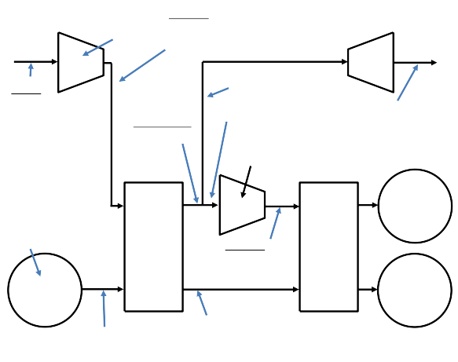
Suspension
Suspending the capsule within the tube presents a substantial technical challenge due to transonic cruising velocities. Conventional wheel and axle systems become impractical at high speed due frictional losses and dynamic instability. A viable technical solution is magnetic levitation; however the cost associated with material and construction is prohibitive. An alternative to these conventional options is an air bearing suspension. Air bearings offer stability and extremely low drag at a feasible cost by exploiting the ambient atmosphere in the tube.
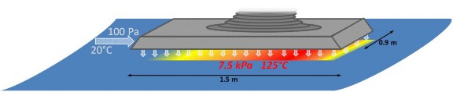
Figure 12: Schematic of air bearing skis that support the capsule.
Externally pressurized and aerodynamic air bearings are well suited for the Hyperloop due to exceptionally high stiffness, which is required to maintain stability at high speeds. When the gap height between a ski and the tube wall is reduced, the flow field in the gap exhibits a highly non-linear reaction resulting in large restoring pressures. The increased pressure pushes the ski away from the wall, allowing it to return to its nominal ride height. While a stiff air bearing suspension is superb for reliability and safety, it could create considerable discomfort for passengers onboard. To account for this, each ski is integrated into an independent mechanical suspension, ensuring a smooth ride for passengers. The capsule may also include traditional deployable wheels similar to aircraft landing gear for ease of movement at speeds under 100 mph (160 kph) and as a component of the overall safety system.
Hyperloop Passenger Capsule
Hyperloop capsules will float above the tube’s surface on an array of 28 air bearing skis that are geometrically conformed to the tube walls. The skis, each
4.9 ft (1.5 meters) in length and 3.0 ft (0.9 meters) in width, support the
weight of the capsule by floating on a pressurized cushion of air 0.020 to 0.050 in. (0.5 to 1.3 mm) off the ground. Peak pressures beneath the skis need only reach 1.4 psi (9.4 kPa) to support the passenger capsule (9% of sea level atmospheric pressure). The skis depend on two mechanisms to pressurize the thin air film: external pressurization and aerodynamics.
The aerodynamic method of generating pressure under the air bearings becomes appreciable at moderate to high capsule speeds. As the capsule accelerates up to cruising speed, the front tip of each ski is elevated relative
to the back tip such that the ski rests at a slight angle of 0.05º. Viscous forces
trap a thin film of air in the converging gap between the ski and the tube wall. The air beneath the ski becomes pressurized which alters the flow field to satisfy fundamental laws of mass, momentum, and energy conservation. The resultant elevated pressure beneath the ski relative to the ambient atmosphere provides a net lifting force that is sufficient to support a portion of the capsule’s weight.
However, the pressure field generated by aerodynamics is not sufficient to support the entire weight of the vehicle. At lower speeds, very little lift can be generated by aerodynamic mechanisms. Temperature and density in the fluid film begin to rise more rapidly than pressure at high speeds, thus lift ceases to increase as the capsule accelerates into the transonic regime.
Lift is supplemented by injecting highly pressurized air into the gap. By applying an externally supplied pressure, a favorable pressure distribution is established beneath the bearing and sufficient lift is generated to support the capsule. This system is known as an external pressure (EP) bearing and it is effective when the capsule is stationary or moving at very high speeds. At nominal weight and g-loading, a capsule on the Hyperloop will require air injection beneath the ski at a rate of 0.44 lb/s (0.2 kg/s) at 1.4 psi (9.4 kPa) for the passenger capsule. The air is introduced via a network of grooves in the bearing’s bottom surface and is sourced directly from the high pressure air reservoir onboard the capsule.
The aerodynamically and externally pressurized film beneath the skis will generate a drag force on the capsule. The drag may be computed by recognizing that fluid velocity in the flow field is driven by both the motion of the tube wall relative to the ski and by a pressure gradient, which is typically referred to as a Couette-Poiseuille flow. Such flows are well understood, and the resultant drag can be computed analytically (as done in this alpha study) and improved and/or validated by computational methods. The predicted total drag generated by the 28 air bearings at a capsule speed of 760 mph (1,220 kph) is 31 lbf (140 N), resulting in a 64 hp (48 kW) power loss.
The passenger capsule air bearing system weight is expected to be about 6,200 lb (2,800 kg) including the compressors, air tank, plumbing, suspension, and bearing surfaces. The overall cost of the air bearing components is targeted to be no more than $475,000.
Hyperloop Passenger Plus Vehicle Capsule
The passenger plus vehicle version of the Hyperloop capsule places more aggressive lifting requirements on the air bearings, but the expanded diameter of the tube provides a greater surface area for lift generation. For this version, an extra 12 in. (30 cm) of width would be added to each bearing. The nominal
air supply pressure would increase to 1.6 psi (11.2 kPa), but the flow rate required would remain 0.44 lb/s (0.2 kg/s) thanks to the increased area under the skis. Drag on the skis at 42 lbf (187 N), results in a power loss of 85 hp (63 kW).
The passenger plus vehicle capsule air bearing system weight is expected to be about 8,400 lb (3,800 kg) including the compressors, air tank, plumbing, suspension, and bearing surfaces. The overall cost of the air bearing components is targeted to be no more than $565,000.
Onboard Power
The passenger capsule power system includes an estimated 5,500 lb (2,500 kg) of batteries to power the onboard compressor and capsule systems in addition to the compressor motor and coolant. The battery, motor, and electronic components cost is estimated to be near $150,000 per capsule in addition to the cost of the suspension system.
The passenger plus vehicle capsule power system includes an estimated 12,100 lb (5,500 kg) of batteries to power the onboard compressor and capsule systems in addition to the compressor motor and coolant. The battery, motor and electronic components cost is estimated to be near $200,000 per capsule in addition to the cost of the suspension system.
Propulsion
In order to propel the vehicle at the required travel speed, an advanced linear motor system is being developed to accelerate the capsule above 760 mph (1,220 kph) at a maximum of 1g for comfort. The moving motor element (rotor) will be located on the vehicle for weight savings and power requirements while the tube will incorporate the stationary motor element (stator) which powers the vehicle. More details can be found in the section 4.3.
Hyperloop Passenger Capsule
The overall propulsion system weight attached to the capsule is expected to be near 2,900 lb (1,300 kg) including the support and emergency braking system. The overall cost of the system is targeted to be no more than $125,000. This brings the total capsule weight near 33,000 lb (15,000 kg) including passenger and luggage weight.
Hyperloop Passenger Plus Vehicle Capsule
The overall propulsion system weight attached to the capsule is expected to be near 3,500 lb (1,600 kg) including the support and emergency braking system. The overall cost of the system is targeted to be no more than $150,000. This
brings the total capsule weight near 57,000 lb (26,000) kg including passenger, luggage, and vehicle weight.
Cost
The overall cost of the Hyperloop passenger capsule version (Table 1) is expected to be under $1.35 million USD including manufacturing and assembly cost. With 40 capsules required for the expected demand, the total cost of capsules for the Hyperloop system should be no more than $54 million USD or approximately 1% of the total budget.
Although the overall cost of the project would be higher, we have also detailed the expected cost of a larger capsule (Table 2) which could carry not only passengers but cargo and cars/SUVs as well. The frontal area of the capsule would have to be increased to 43 ft2 (4 m2) and the tube diameter would be increased to 10 ft 10 in. (3.3 m).
Table 1. Crew capsule weight and cost breakdown Vehicle Component Cost ($) Weight (kg)
Capsule Structure & Doors: | $ 245,000 | 3100 |
Interior & Seats: | $ 255,000 | 2500 |
Propulsion System: | $ 75,000 | 700 |
Suspension & Air Bearings: | $ 200,000 | 1000 |
Batteries, Motor & Coolant: | $ 150,000 | 2500 |
Air Compressor: | $ 275,000 | 1800 |
Emergency Braking: | $ 50,000 | 600 |
General Assembly: | $ 100,000 | N/A |
Passengers & Luggage: | N/A | 2800 |
Total/Capsule: $ 1,350,000 15000
Total for Hyperloop: $ 54,000,000
Table 2. Cargo and crew capsule weight and cost breakdown Vehicle Component Cost ($) Weight (kg)
Capsule Structure & Doors: | $ 275,000 | 3500 |
Interior & Seats: | $ 185,000 | 2700 |
Propulsion System: | $ 80,000 | 800 |
Suspension & Air Bearings: | $ 265,000 | 1300 |
Batteries, Motor & Coolant: | $ 200,000 | 5500 |
Air Compressor: | $ 300,000 | 2500 |
Emergency Braking: | $ 70,000 | 800 |
General Assembly: | $ 150,000 | N/A |
Passengers & Luggage: | N/A | 1400 |
Car & Cargo: | N/A | 7500 |
Total/Capsule: | $ 1,525,000 | 26000 |
Total for Hyperloop: | $ 61,000,000 | |
The main Hyperloop route consists of a partially evacuated cylindrical tube that connects the Los Angeles and San Francisco stations in a closed loop system (Figure 2). The tube is specifically sized for optimal air flow around the capsule improving performance and energy consumption at the expected travel speed. The expected pressure inside the tube will be maintained around 0.015 psi (100 Pa, 0.75 torr), which is about 1/6 the pressure on Mars. This low pressure minimizes the drag force on the capsule while maintaining the relative ease of pumping out the air from the tube. The efficiency of industrial vacuum pumps decreases exponentially as the pressure is reduced (Figure 13), so further benefits from reducing tube pressure would be offset by increased pumping complexity.
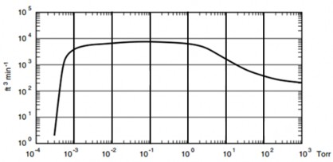
In order to minimize cost of the Hyperloop tube, it will be elevated on pillars which greatly reduce the footprint required on the ground and the size of the construction area required. Thanks to the small pillar footprint and by maintaining the route as close as possible to currently operated highways, the amount of land required for the Hyperloop is minimized. More details are available for the route in section 4.4.
The Hyperloop travel journey will feel very smooth since the capsule will be guided directly on the inner surface of the tube via the use of air bearings and suspension; this also prevents the need for costly tracks. The capsule will bank off the walls and include a control system for smooth returns to nominal capsule location from banking as well. Some specific sections of the tube will incorporate the stationary motor element (stator) which will locally guide and accelerate (or decelerate) the capsule. More details are available for the propulsion system in section 4.3. Between linear motor stations, the capsule will glide with little drag via air bearings.
Geometry
The geometry of the tube depends on the choice of either the passenger version of Hyperloop or the passenger plus vehicles version of Hyperloop.
In either case, if the speed of the air passing through the gaps accelerates to supersonic velocities, then shock waves form. These waves limit how much air can actually get out of the way of the capsule, building up a column of air in front of its nose and increasing drag until the air pressure builds up significantly in front of the capsule. With the increased drag and additional mass of air to push, the power requirements for the capsule increase significantly. It is therefore very important to avoid shock wave formation around the capsule by careful selecting of the capsule/tube area ratio. This ensures sufficient mass air flow around and through the capsule at all operating speeds. Any air that cannot pass around the annulus between the capsule and tube is bypassed using the onboard compressor in each capsule.
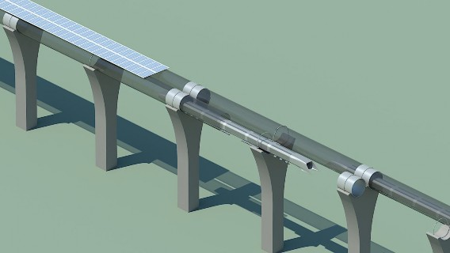
Figure 14. Hyperloop capsule in tube cutaway with attached solar arrays.
Passenger Hyperloop Tube
The inner diameter of the tube is optimized to be 7 ft 4 in. (2.23 m) which is small enough to keep material cost low while large enough to provide some alleviation of choked air flow around the capsule. The tube cross-sectional area is 42.2 ft2 (3.91 m2) giving a capsule/tube area ratio of 36% or a diameter ratio of 60%. It is critical to the aerodynamics of the capsule to keep this ratio as large as possible, even though the pressure in the tube is extremely low. As the capsule moves through the tube, it must displace its own volume of air, in
a loosely similar way to a boat in water. The displacement of the air is constricted by the walls of the tube, which makes it accelerate to squeeze through the gaps. Any flow not displaced must be ingested by the onboard compressor of each capsule, which increases power requirements.
The closed loop tube will be mounted side by side on elevated pillars as seen in Figure 5. The surface above the tubes will be lined with solar panels to provide the required system energy. This represents a possible area of 14 ft (4.25 m) wide for more than 350 miles (563 km) of tube length. With an expected solar panel energy production of 0.015 hp/ft2 (120 W/m2), we can expect the system
to produce a maximum of 382,000 hp (285 MW) at peak solar activity. This would actually be more energy than needed for the Hyperloop system and the detailed power requirements will be detailed in section 4.3.
Passenger Plus Vehicle Hyperloop Tube
The inner diameter of the tube is optimized to be 10 ft 10 in. (3.30 m), larger than the passenger version to accommodate the larger capsule. The tube cross- sectional area is 92.1 ft2 (8.55 m2) giving a capsule/tube area ratio of 47% or a diameter ratio of 68%.
The closed passenger plus vehicle Hyperloop tube will be mounted side by side in the same manner as the passenger version as seen in Figure 5. The surface above the tubes will be lined with solar panels to provide the required system energy. This represents a possible area of 22 ft (6.6 m) wide for more than 350 miles (563 km) of tube length. With an expected solar panel energy production
of 0.015 hp/ft2 (120W/m2), we can expect the system to produce a maximum of 598,000 hp (446 MW) at peak solar activity. This would actually be more
energy than needed for the passenger plus vehicle Hyperloop system and the
detailed power requirements will be detailed in section 4.3.
Station Connections
The stations are isolated from the main tube as much as possible in order to limit air leaks into the system. In addition, isolated branches and stations off the main tubes could be built to access some towns along the way between Los Angeles and San Francisco. Vacuum pumps will run continuously at various locations along the length of the tube to maintain the required pressure despite any possible leaks through the joint and stations. The expected cost of all required vacuum pumps is expected to be no more than $10 million USD.
Tube Construction
In order to keep cost to a minimum, a uniform thickness steel tube reinforced with stringers was selected as the material of choice for the inner diameter tube Tube sections would be pre-fabricated and installed between pillar supports spaced 100 ft (30 m) on average, varying slightly depending on
location. This relatively short span allows keeping tube material cost and deflection to a minimum.
The steel construction allows simple welding processes to join different tube sections together. A specifically designed cleaning and boring machine will make it possible to surface finish the inside of the tube and welded joints for a better gliding surface. In addition, safety emergency exits and pressurization ports will be added in key locations along the length of the tube.
Passenger Hyperloop Tube
A tube wall thickness between 0.8 and 0.9 in. (20 to 23 mm) is necessary to provide sufficient strength for the load cases considered such as pressure differential, bending and buckling between pillars, loading due to the capsule weight and acceleration, as well as seismic considerations.
The expected cost for the tube is expected to be less than $650 million USD, including pre-fabricated tube sections with stringer reinforcements and emergency exits. The support pillars and joints which will be detailed in section 4.2.3.
Passenger Plus Vehicle Hyperloop Tube
The tube wall thickness for the larger tube would be between 0.9 and 1.0 in (23 to 25 mm). Tube cost calculations were also made for the larger diameter tube which would allow usage of the cargo and vehicle capsule in addition to the passenger capsule. In that case, the expected cost for the tube is expected to be less than $1.2 billion USD. Since the spacing between pillars would not change and the pillars are more expensive than the tube, the overall cost increase is kept to a minimum.
Pylons and Tunnels
The tube will be supported by pillars which constrain the tube in the vertical direction but allow longitudinal slip for thermal expansion as well as dampened lateral slip to reduce the risk posed by earthquakes. In addition, the pillar to tube connection nominal position will be adjustable vertically and laterally to ensure proper alignment despite possible ground settling. These minimally constrained pillars to tube joints will also allow a smoother ride. Specially designed slip joints at each stations will be able take any tube length variance due to thermal expansion. This is an ideal location for the thermal expansion joints as the speed is much lower nearby the stations. It thus allows the tube to be smooth and welded along the high speed gliding middle section.
The spacing of the Hyperloop pillars retaining the tube is critical to achieve the design objective of the tube structure. The average spacing is 100 ft (30 m), which means there will be near 25,000 pillars supporting both tubes and solar
panels. The pillars will be 20 ft (6 m) tall whenever possible but may vary in height in hilly areas or where obstacles are in the way. Also, in some key areas, the spacing will have to vary in order to pass over roads or other obstacles. Small spacing between each support reduces the deflection of the tube keeping the capsule steadier and the journey more enjoyable. In addition, reduced spacing has increased resistance to seismic loading as well as the lateral acceleration of the capsule.
Due to the sheer quantity of pillars required, reinforced concrete was selected as the construction material due to its very low cost per volume. In some short areas, tunneling may be required to avoid going over mountains and to keep the route as straight as possible. The expected cost for the pillar construction and tube joints is expected to be no more than $2.55 billion USD for the passenger version tube and $3.15 billion USD for the passenger plus vehicle version tube. The expected cost for the tunneling is expected to be no more than $600 million USD for the smaller diameter tube and near $700 million USD for the larger diameter tube.
Structural simulations (Figure 15 through Figure 20) have demonstrated the capability of the Hyperloop to withstand atmospheric pressure, tube weight, earthquakes, winds, etc. Dampers will be incorporate between the pylons and tubes to isolate movements in the ground from the tube.
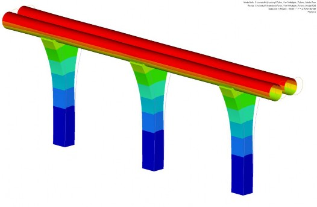
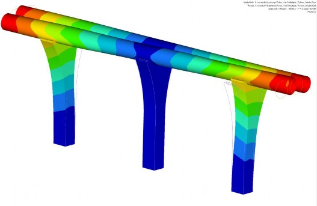
Figure 16. Second mode shape of Hyperloop at 3.42Hz (magnified x1500).
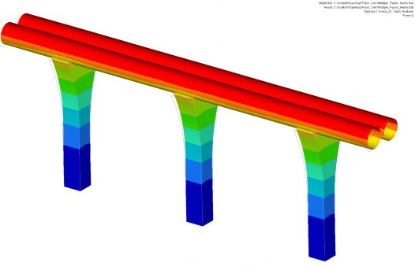
Figure 17. Deformation at 1g Inertia in X (in.) (magnified x10).
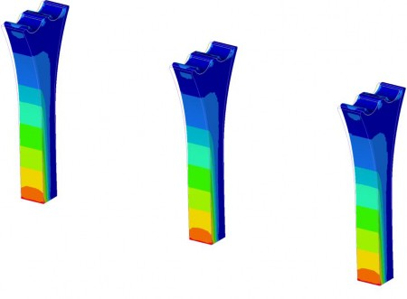
Figure 18. Maximum principal stress at 1g Inertia in X (psi) (magnified x10).
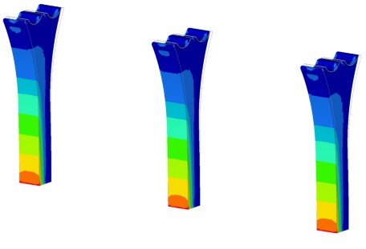
Figure 19. Minimum principal stress at 1g Inertia in X (psi) (magnified x10).

Station Construction
The intention for Hyperloop stations is for them to be minimalist but practical and with a boarding process and layout much simpler than airports.
Due to the short travel time and frequent departures, it is envisaged that there will be a continual flow of passengers through each Hyperloop station, in contrast to the pulsed situation at airports which leads to lines and delays. Safety and security are paramount, and so security checks will still be made in a similar fashion as TSA does for the airport. The process could be greatly streamlined to reduce wait time and maintain a more continuous passenger flow.
All ticketing and baggage tracking for the Hyperloop will be handled electronically, negating the need for printing boarding passes and luggage labels. Since Hyperloop travel time is very short, the main usage is more for commuting than for vacations. There would be a luggage limit of 2 bags per person, for no more than 110 lb (50 kg) in total. Luggage would be stowed in a separate compartment at the rear of the capsule, in a way comparable to the overhead bins on passenger aircraft. This luggage compartment can be removed from the capsule, so that the process of stowing and retrieving luggage can be undertaken separately from embarking or disembarking the capsule’s passenger cabin. In addition, Hyperloop staff will take care of loading and unloading passenger luggage in order to maximize efficiency.
The transit area at a Hyperloop terminal would be a large open area with two large airlocks signifying the entry and exit points for the capsules. An arriving capsule would enter the incoming airlock, where the pressure is equalized with
the station, before being released into the transit area. The doors of the capsule would open, and the passengers could disembark. The luggage pod would be quickly unloaded by the Hyperloop staff or separated from the capsule so that baggage retrieval would not interfere with the capsule turnaround.
Once vacated, the capsule would be rotated on a turntable, and aligned for re- entry into the Hyperloop tube. The departing passengers, and their pre-loaded luggage pod, would then enter the capsule. A Hyperloop attendant will then perform a safety check of each passenger’s seat belts before the capsule is cleared for departure. At this point the capsule would then be moved forward into the exit airlock, where the pressure is lowered to the operating level of the Hyperloop, and then sent on its way. Note that loading and unloading occurring in parallel with up to three capsules at a given station at any time. The expected cost for each station is expected to be around $125 million for a total of $250 million USD initially.
Cost
The overall cost of the tube, pillars, vacuum pumps and stations is thus expected to be around $4.06 billion USD for the passenger version of Hyperloop. This does not include the cost of the propulsion linear motors or solar panels. The tube represents approximately 70% of the total budget.
The larger 10 ft 10 in. (3.3 m) tube that would allow the cargo and vehicle capsules to fit, would have a total cost including the tube, pillars, vacuum pumps, and stations around $5.31 billion USD. This minimal cost increase would allow a much more versatile Hyperloop system.
The propulsion system has these basic requirements:
Accelerate the capsule from 0 to 300 mph (480 kph) for relatively low speed travel in urban areas.
Maintain the capsule at 300 mph (480 kph) as necessary, including during ascents over the mountains surrounding Los Angeles and San Francisco.
To accelerate the capsule from 300 to 760 mph (480 to 1,220 kph) at 1g
at the beginning of the long coasting section along the I-5 corridor.
To decelerate the capsule back to 300 mph (480 kph) at the end of the I- 5 corridor.
The Hyperloop as a whole is projected to consume an average of 28,000 hp (21 MW). This includes the power needed to make up for propulsion motor efficiency (including elevation changes), aerodynamic drag, charging the batteries to power on-board compressors, and vacuum pumps to keep the tube evacuated. A solar array covering the entire Hyperloop is large enough to
provide an annual average of 76,000 hp (57 MW), significantly more than the Hyperloop requires.
Since the peak powers of accelerating and decelerating capsules are up to 3 times the average power, the power architecture includes a battery array at each accelerator, allowing the solar array to provide only the average power needed to run the system. Power from the grid is needed only when solar power is not available.
This section details a large linear accelerator, capable of the 300 to 760 mph (480 to 1,220 kph) acceleration at 1g. Smaller accelerators appropriate for urban areas and ascending mountain ranges can be scaled down from this system.
The Hyperloop uses a linear induction motor to accelerate and decelerate the capsule. This provides several important benefits over a permanent magnet motor:
Lower material cost – the rotor can be a simple aluminum shape, and does not require rare-earth elements.
Lighter capsule.
Smaller capsule dimensions.
The lateral forces exerted by the stator on the rotor though low at 0.9 lbf/ft (13 N/m) are inherently stabilizing. This simplifies the problem of keeping the rotor aligned in the air gap.
Rotor (mounted to capsule)
Stator (mounted to tube)
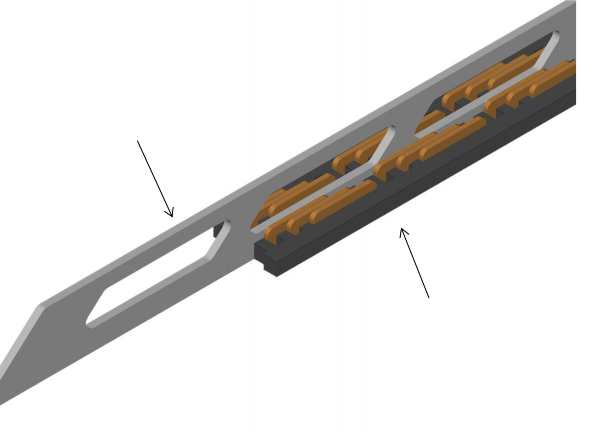
Figure 21. Rotor and stator 3D diagram
Each accelerator has two 65 MVA inverters, one to accelerate the outgoing capsule, and one to capture the energy from the incoming capsule. Inverters in the 10+ MVA power range are not unusual in mining, drives for large cargo ships, and railway traction. Moreover, 100+ MVA drives are commercially available. Inexpensive semiconductor switches allow the central inverters to energize only the section of track occupied by a capsule, improving the power factor seen by the inverters.
The inverters are physically located at the highest speed end of the track to minimize conductor cost.
Solar system
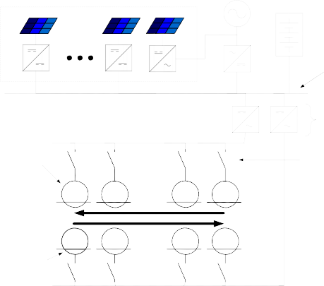
Distributed along length, 285MW peak power total
6MW grid connection and grid tie inverter
Energy storage E = 36 MWhr PCONT = 37MW PPEAK = 52MW
HVDC bus
Traction inverters 65MVA each
Linear motors for arrival track
M M M M
Solid-state switches
M M M M
Linear motors for departure track

Low speed (300mph) end Traction power = 20MW
High speed (700mph) end Traction power = 46MW
Figure 22. Linear accelerator concept for capsule acceleration and deceleration between 300 and 760 mph (480 and 1,220 kph).
Capsule Components (Rotor)
The rotor of the linear accelerators is very simple – an aluminum blade 49 ft (15 m) long, 1.5 ft (0.45 m) tall, and 2 in. (50 mm) thick. Current flows mainly in the outer 0.4 in. (10 mm) of this blade, allowing it to be hollow to decrease weight and cost.
The gap between the rotor and the stator is 0.8 in. (20 mm) on each side. A combination of the capsule control system and electromagnetic centering forces allows the capsule to safely enter, stay within, and exit such a precise gap.
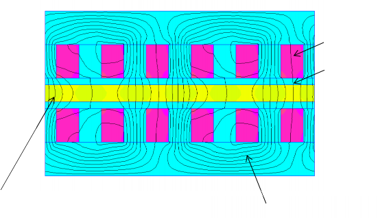
Copper coils
Air gap
Rotor aluminum (mounted to capsule) Stator iron (mounted to tube)
Figure 23. Magnetic field strength inside linear induction motor
Tube Components (Stator)
The stator is mounted to the bottom of the tube over the entire 2.5 miles (4.0 km) it takes to accelerate and decelerate between 300 and 760 mph (480 and 1,220 km). It is approximately 1.6 ft (0.5 m) wide (including the air gap) and
4.0 in. (10 cm) tall, and weighs 530 lb/ft (800 kg/m).
Laid out symmetrically on each side of the rotor, its electrical configuration is 3-phase, 1 slot per pole per phase, with a variable linear pitch (1.3 ft or 0.4 m maximum). The number of turns per slot also varies along the length of the stator, allowing the inverter to operate at nearly constant phase voltage, which simplifies the power electronics design. The two halves of the stator require bracing to resist the magnetic forces of 20 lbf/ft (300N/m) that try to bring them together.
Rotor
Stator windings
Stator iron
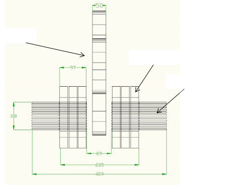
Figure 24. Cross section of rotor inside stator
Energy Storage Components
Energy storage allows this linear accelerator to only draw its average power of 8,000 hp (6 MW) (rather than the peak power of 70,000 hp or 52 MW) from its solar array.
Building the energy storage element out of the same lithium ion cells available in the Tesla Model S is economical. A battery array with enough power capability to provide the worst-case smoothing power has a lot of energy – launching 1 capsule only uses 0.5% of the total energy – so degradation due to cycling is not an issue. With proper construction and controls, the battery could be directly connected to the HVDC bus, eliminating the need for an additional DC/DC converter to connect it to the propulsion system.
Cost
As described above, the propulsion elements on the capsule are limited to the rotor and not expected to cost any more than $3 million USD for the overall system. The bulk of the propulsion cost is for the stator elements connected to the track and for the inverters to drive the stator. All tube-side propulsion costs together for linear accelerators add up to $140 million USD.
This cost is roughly divided as followed:
Stator and structure materials = 54%
Power electronics (traction inverters, grid tie inverters) = 33%
Energy storage = 13%
The solar array and associated electronics provide an average power of 28,000 hp (21 MW) and are expected to cost approximately $210 million USD.
Propulsion for Passenger Plus Vehicle System
Compared to the passenger-only capsule, the passenger plus vehicle capsule weighs more, requires a more powerful compressor, and has 50% higher total drag. This increases both the peak and continuous power requirements on the propulsion system, so that the Hyperloop now consumes an average of 66,000 hp (49 MW). However, there is still more than enough solar power available on the wider tubes (122,000 hp or 91 MW, on average) to provide this.
The expected total cost for this larger propulsion system is $691 million USD, divided as follows:
66,000 hp (49 MW) (yearly average) solar array: $490 million USD
Propulsion system total: $200 million USD o Stator and structure materials = 47% o Power electronics = 37%
o Energy storage = 16%
The Hyperloop will be capable of traveling between Los Angeles and San Francisco in approximately 35 minutes. This requirement tends to size other portions of the system. Given the performance specification of the Hyperloop, a route has been devised to satisfy this design requirement. The Hyperloop route should be based on several considerations, including:
Maintaining the tube as closely as possible to existing rights of way (e.g., following the I-5).
Limiting the maximum capsule speed to 760 mph (1,220 kph) for aerodynamic considerations.
Limiting accelerations on the passengers to 0.5g.
Optimizing locations of the linear motor tube sections driving the capsules.
Local geographical constraints, including location of urban areas, mountain ranges, reservoirs, national parks, roads, railroads, airports, etc. The route must respect existing structures.
For aerodynamic efficiency, the velocity of a capsule in the Hyperloop is typically:
300 mph (480 kph) where local geography necessitates a tube bend radii
< 1.0 mile (1.6 km)
760 mph (1,220 kph) where local geography allows a tube bend > 3.0 miles (4.8 km) or where local geography permits a straight tube.
These bend radii have been calculated so that the passenger does not experience inertial accelerations that exceed 0.5g. This is deemed the maximum inertial acceleration that can be comfortably sustained by humans for short periods. To further reduce the inertial acceleration experienced by passengers, the capsule and/or tube will incorporate a mechanism that will allow a degree of ‘banking’.
The Hyperloop route was created by the authors using Google Earth.
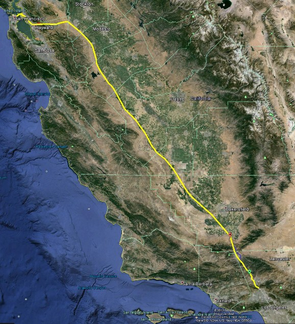
Figure 25. Overview of Hyperloop route from Los Angeles to San Francisco.
Route Optimization
In order to avoid bend radii that would lead to uncomfortable passenger inertial accelerations and hence limit velocity, it is necessary to optimize the route. This can be achieved by deviating from the current highway system, earth removal, constructing pylons to achieve elevation change or tunneling.
The proposed route considers a combination of 20, 50, and 100 ft (6, 15, and 30 m, respectively) pylon heights to raise and lower the Hyperloop tube over geographical obstacles. A total tunnel length of 15.2 miles (24.5 km) has been
included in this optimization where extreme local gradients (>6%) would preclude the use of pylons. Tunneling cost estimations are estimated at $50 million per mile ($31 million per km). The small diameter of the Hyperloop tube should keep tunneling costs to a far more reasonable level than traditional automotive and rail tunnels.
The route has been divided into the following sections:
Summary
300 mph (480 kph) for the Los Angeles Grapevine South section at 0.5g.
Total time of 167 seconds
555 mph (890 kph) for the Los Angeles Grapevine North section at 0.5g.
Total travel time of 435 seconds
760 mph (1,220 kph ) along I-5 at 0.5g.
Total travel time of 1,518 seconds
555 mph (890 kph) along I-580 slowing to 300 mph (480 kph) into San Francisco.
Total travel time of 2,134 seconds (35 minutes)
The velocity (Figure 26) along the Hyperloop and distance (Figure 27) as a function of time summarize the route.
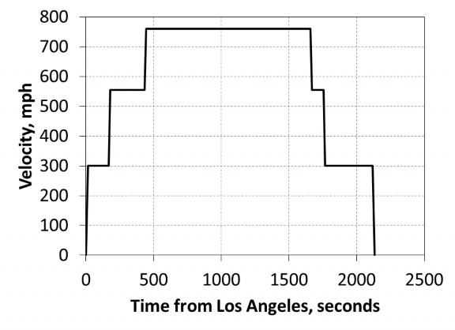
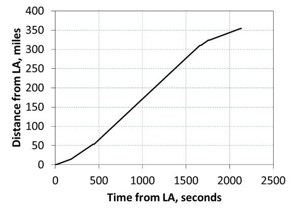
Los Angeles/Grapevine - South
Visualization - The preliminary route is shown in yellow. Bend radii are shown in red. The green dashed line delineates the north/south Grapevine definition in this document.
Route - Follows I-5 through Santa Clarita and Castaic.
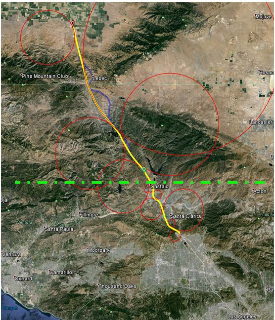
Figure 28. Los Angeles/Grapevine South Section of proposed Hyperloop route.
Table 3. Los Angeles/Grapevine South data at 300 mph (480 kph).
Criteria | 0.5g Acceleration |
Min. bend radius at 300 mph (483 kph) | 2.28 miles (3.67 km) |
Section Distance | 13.4 miles (21.6 km) |
Journey time | 167.6 seconds |
Tunnel distance | 1.0 miles (1.61 km) |
No. of 20 ft (6 m) pylons | 563 |
No. of 50 ft (15 m) pylons | 80 |
No. of 100 ft (30 m) Pylons | 12 |
Additional length Required | 1.20 miles (1.93 km) |
Los Angeles/Grapevine – North
Visualization - The preliminary route is shown in yellow. Bend radii are shown in red. The green dashed line delineates the north/south Grapevine definition in this document.
Route - Significant deviation from I-5 in order to increase bend radius and develop straight sections.
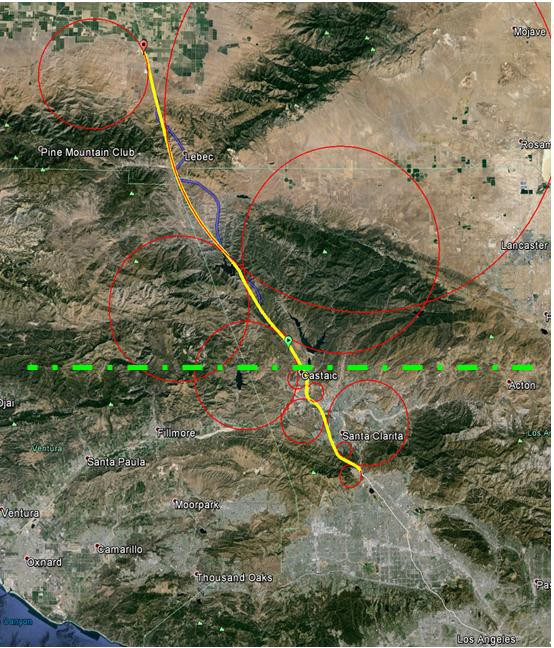
Figure 29. Los Angeles/Grapevine North Section of proposed Hyperloop route.

Table 4. Los Angeles/Grapevine North data at 555 mph (890 kph).
Criteria 0.5g
Acceleration
Min. bend radius at 555 mph (890 kph)
7.80 miles
(12.6 km)
Distance 40.0 miles
(64.4 km)
Journey time 267.4 seconds
Tunnel distance 10.7 miles
(17.2 km)
No. of 20 ft (6 m) Pylons
No. of 50 ft (15 m) Pylons
No. of 100 ft (30 m) Pylons
Additional length required
492
260
795
24 miles
(38.6 km)
I-5
Visualization - The preliminary route is shown in yellow. Bend radii are shown in red.
Route - Follows I-5 to minimize land/right of way purchase costs.
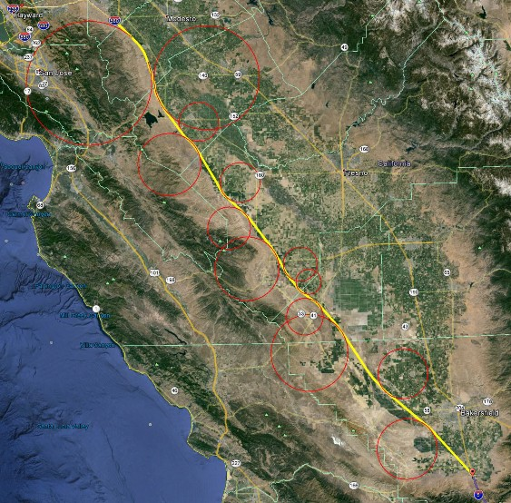
Figure 30. I-5 Section of proposed Hyperloop route.
Table 5. I-5 Section data at 760 mph (1,120 kph).
Criteria | 0.5g Acceleration |
Min. bend radius at 760 mph (1,220 kph) | 14.6 miles (23.5 km) |
Distance | 227 miles (365 km) |
Journey time | 1,173.0 seconds |
Tunnel distance | 0 miles (0 km) |
No. of 20 ft (6 m) pylons | 10,930 |
No. of 50 ft (15 m) pylons | 1,056 |
No. of 100 ft (30 m) pylons | 0 |
Additional length required | 14 miles (22.5 km) |
I-580/San Francisco Bay
Visualization - The preliminary route is shown in yellow. Bend radii are shown in red.
Route - Follows I-580 to minimize land/right of way purchase costs.
Deviation from I-580 West of Dublin in order to develop straight sections.
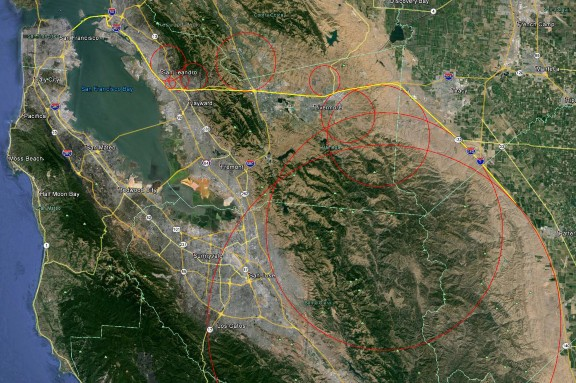
Figure 31. I-580/San Francisco Bay Section of proposed Hyperloop route.
Table 6. I-580/San Francisco Bay Section data at 300, 555, and 760 mph (480, 890, and 1,120 kph, respectively).
Criteria | 0.5g Acceleration |
Min. bend radius at 300 mph (480 kph) | 2.28 miles (3.67 km) |
Min. bend radius at 555 mph (890 kph) | 7.80 miles (12.55 km) |
Min. bend radius at 760 mph (1,220 kph) | 14.6 miles (23.5 km) |
Distance | 73.9 miles (119 km) |
Journey time | 626.0 seconds |
Tunnel distance | 3.5 miles (5.6 km) |
No. of 20 ft (6 m) pylons | 2,783 |
No. of 50 ft (15 m) pylons | 775 |
No. of 100 ft (30 m) pylons | 159 |
Additional length required | 5.7 miles (9.2 km) |
Station Locations
The major stations for Hyperloop are suggested based on high traffic regions between major cities. The largest cities by metro population in California according to 2010 to 2012 estimates from various sources (Table 7) are considered for station locations.
Table 7. Largest cities in California by 2013 population.
City | Population |
(millions) |
Los Angeles | 18.1 |
San Francisco/San Jose |
8.4 |
San Diego | 3.1 |
Sacramento | 2.6 |
Fresno | 1.1 |
Stations at these major population centers are considered for Hyperloop. One additional traffic corridor to consider is between Los Angeles, California and Las Vegas, Nevada with a metro population of 2.1 million. Significant traffic is present through this corridor on a weekly basis.
Suggested main route Suggested main stations Proposed branches Proposed branch stations
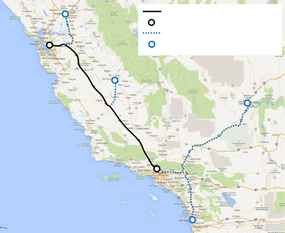
Figure 32. Suggested Hyperloop route map (map courtesy of Google Maps).
The traffic between Los Angeles, California and San Francisco/San Jose, California is estimated to be at least 6 million travelers per year. This possibly represents the busiest corridor of travel in California. Travel along this corridor is anticipated to increase with completion of the Hyperloop due to both decreased travel time and decreased travel cost.
Additional Hyperloop stations are suggested considered at the following major population centers:
San Diego, California:
Connects to Los Angeles, California main station.
Capsule departures every 5 minutes.
Transports around 3 million people per year.
Las Vegas, Nevada:
Connects to Los Angeles, California main station.
Uses a portion of the San Diego branch route near Los Angeles and tube branches near San Bernardino, California.
Capsule departures every 8 minutes.
Transports around 1.8 million people per year.
Sacramento, California:
Connects to San Francisco, California main station.
Uses a portion of the main route near San Francisco and tube branches near Stockton, California.
Capsule departures every 15 minutes.
Transports around 1 million people per year.
Fresno, California:
Connects to both San Francisco, California and Los Angeles, California main stations.
Los Angeles bound travelers:
Uses the main route closer to San Francisco plus a small branch along State Route 41 near Fresno.
Capsule departures every 15 minutes.
Transports around 1 million people per year.
San Francisco bound travelers:
Uses the main route closer to Los Angeles plus a small branch along State Route 41 near Fresno.
Capsule departures every 30 minutes.
Transports around 0.5 million people per year.
The design of Hyperloop has been considered from the start with safety in mind. Unlike other modes of transport, Hyperloop is a single system that incorporates the vehicle, propulsion system, energy management, timing, and route. Capsules travel in a carefully controlled and maintained tube environment. The system is immune to wind, ice, fog, and rain. The propulsion system is integrated into the tube and can only accelerate the capsule to speeds that are safe in each section. With human control error and unpredictable weather removed from the system, very few safety concerns remain.
Some of the safety scenarios below are unique to the proposed system, but all should be considered relative to other forms of transportation. In many cases Hyperloop is intrinsically safer than airplanes, trains, or automobiles.
Onboard Passenger Emergency
All capsules would have direct radio contact with station operators in case of emergencies, allowing passengers to report any incident, to request help and
to receive assistance. In addition, all capsules would be fitted with first aid equipment.
The Hyperloop allows people to travel from San Francisco to LA in 30 minutes. Therefore in case of emergency, it is likely that the best course of action would be for the capsule to communicate the situation to the station operator and for the capsule to finish the journey in a few minutes where emergency services would be waiting to assist.
Typical times between an emergency and access to a physician should be shorter than if an incident happened during airplane takeoff. In the case of the airplane, the route would need to be adjusted, other planes rerouted, runways cleared, airplane landed, taxi to a gate, and doors opened. An emergency in a Hyperloop capsule simply requires the system to complete the planned journey and meet emergency personnel at the destination.
Power Outage
The vast majority of the Hyperloop travel distance is spent coasting and so the capsule does not require continuous power to travel. The capsule life support systems will be powered by two or more redundant lithium ion battery pack and so would be unaffected by a power outage. In the event of a power outage occurring after a capsule had been launched, all linear accelerators would be equipped with enough energy storage to bring all capsules currently in the Hyperloop tube safely to a stop at their destination. In addition, linear accelerators using the same storage would complete the acceleration of all capsules currently in the tube. For additional redundancy, all Hyperloop capsules would be fitted with a mechanical braking system to bring capsules safely to a stop.
In summary, all journeys would be completed as expected from the passenger’s perspective. Normal travel schedules would be resumed after power was restored.
Capsule Depressurization
Hyperloop capsules will be designed to the highest safety standards and manufactured with extensive quality checks to ensure their integrity. In the event of a minor leak, the onboard environmental control system would maintain capsule pressure using the reserve air carried onboard for the short period of time it will take to reach the destination. In the case of a more significant depressurization, oxygen masks would be deployed as in airplanes. Once the capsule reached the destination safely it would be removed from service. Safety of the onboard air supply in Hyperloop would be very similar to aircraft, and can take advantage of decades of development in similar systems.
In the unlikely event of a large scale capsule depressurization, other capsules in the tube would automatically begin emergency braking whilst the Hyperloop tube would undergo rapid re-pressurization along its entire length.
Capsule Stranded in Tube
A capsule becoming stranded in the Hyperloop tube is highly unlikely as the capsule coasts the majority of the distance at high speed and so there is no propulsion required for more than 90% of the journey.
If a capsule were somehow to become stranded, capsules ahead would continue their journeys to the destination unaffected. Capsules behind the stranded one would be automatically instructed to deploy their emergency mechanical braking systems. Once all capsules behind the stranded capsule had been safely brought to rest, capsules would drive themselves to safety using small onboard electric motors to power deployed wheels.
All capsules would be equipped with a reserve air supply great enough to ensure the safety of all passengers for a worst case scenario event.
Structural Integrity of the Tube in Jeopardy
A minor depressurization of the tube is unlikely to affect Hyperloop capsules or passengers and would likely be overcome by increased vacuum pump power. Any minor tube leaks could then be repaired during standard maintenance.
In the event of a large scale leak, pressure sensors located along the tube would automatically communicate with all capsules to deploy their emergency mechanical braking systems.
Earthquakes
California is no stranger to earthquakes and transport systems and all built with earthquakes in mind. Hyperloop would be no different with the entire tube length built with the necessary flexibility to withstand the earthquake motions while maintaining the Hyperloop tube alignment.
It is also likely that in the event of a severe earthquake, Hyperloop capsules would be commanded remotely to actuate their mechanical emergency braking systems.
Human Related Incidents
Hyperloop would feature the same high level of security used at airports. However, the regular departure of Hyperloop capsules would result in a steadier and faster flow of passengers through security screening compared to
airports. Tubes located on pylons would limit access to the critical elements of the system. Multiple redundant power sources and vacuum pumps would limit the impact of any single element.
Reliability
The Hyperloop system comprising all infrastructure, mechanical, electrical, and software components will be designed so that it is reliable, durable, and fault tolerant over its service life (100 years), while maintaining safety levels that match or exceed the safety standard of commercial air transportation.
The total cost of the Hyperloop passenger transportation system as outlined is less than $6 billion USD (Table 8). The passenger plus vehicle version of Hyperloop is including both passenger and cargo capsules and the total cost is outlined as $7.5 billion USD (Table 9).
Component Cost
(million USD)
Capsule 54 (40 capsules)
Capsule Structure & Doors 9.8
Interior & Seats 10.2
Compressor & Plumbing 11
Batteries & Electronics 6
Propulsion 5
Suspension & Air Bearings 8
Components Assembly 4
Tube 5,410
Tube Construction 650
Pylon Construction 2,550
Tunnel Construction 600
Propulsion 140
Solar Panels & Batteries 210
Station & Vacuum Pumps 260
Permits & Land 1,000
Cost Margin 536
Total 6,000

Component Cost
(million USD)
Cargo Capsule 30.5 (20 capsules)
Capsule Structure & Doors 5.5
Interior & Seats 3.7
Compressor & Plumbing | 6 |
Batteries, Motor & Electronics | 4 |
Propulsion | 3 |
Suspension & Air Bearings | 5.3 |
Components Assembly | 3 |
Passenger Only Capsule | 40.5 (30 capsules) |
Capsule Structure & Doors | 7.4 |
Interior & Seats | 7.6 |
Compressor & Plumbing | 8.2 |
Batteries, Motor & Electronics | 4.5 |
Propulsion | 3.8 |
Suspension & Air Bearings | 6 |
Components Assembly | 3 |
Tube | 7,000 |
Tube Construction | 1,200 |
Pylon Construction | 3,150 |
Tunnel Construction | 700 |
Propulsion | 200 |
Solar Panels & Batteries | 490 |
Station & Vacuum Pumps | 260 |
Permits & Land | 1,000 |
Cost Margin | 429 |
Total | 7,500 |
A high speed transportation system known as Hyperloop has been developed in this document. The work has detailed two version of the Hyperloop: a passenger only version and a passenger plus vehicle version. Hyperloop could transport people, vehicles, and freight between Los Angeles and San Francisco in 35 minutes. Transporting 7.4 million people each way and amortizing the cost of $6 billion over 20 years gives a ticket price of $20 for a one-way trip for the passenger version of Hyperloop. The passenger plus vehicle version of the Hyperloop is less than 9% of the cost of the proposed passenger only high speed rail system between Los Angeles and San Francisco.
An additional passenger plus transport version of the Hyperloop has been created that is only 25% higher in cost than the passenger only version. This version would be capable of transport passengers, vehicles, freight, etc. The passenger plus vehicle version of the Hyperloop is less than 11% of the cost of the proposed passenger only high speed rail system between Los Angeles and San Francisco. Additional technological developments and further optimization could likely reduce this price.
The intent of this document has been to create a new open source form of transportation that could revolutionize travel. The authors welcome feedback
and will incorporate it into future revisions of the Hyperloop project, following other open source models such as Linux.
Hyperloop is considered an open source transportation concept. The authors encourage all members of the community to contribute to the Hyperloop design process. Iteration of the design by various individuals and groups can help bring Hyperloop from an idea to a reality.
The authors recognize the need for additional work, including but not limited to:
More expansion on the control mechanism for Hyperloop capsules, including attitude thruster or control moment gyros.
Detailed station designs with loading and unloading of both passenger
and passenger plus vehicle versions of the Hyperloop capsules.
Trades comparing the costs and benefits of Hyperloop with more conventional magnetic levitation systems.
Sub-scale testing based on a further optimized design to demonstrate the physics of Hyperloop.
Feedback is welcomed on these or any useful aspects of the Hyperloop design. E-mail feedback to hyperloop@spacex.com or hyperloop@teslamotors.com.